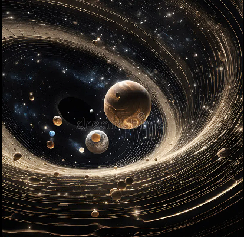
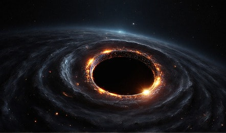

Space Anomalies
What is a Space Anomaly?
A space anomaly refers to an unusual occurrence in space that deviates from the expected behavior of celestial objects or phenomena. These anomalies can arise from various factors, including gravitational effects, magnetic fields, or cosmic events that challenge our current understanding of physics.
Types of Space Anomalies
Space anomalies can be classified into several categories, including:
- Gravitational Anomalies
- Magnetic Anomalies
- Temporal Anomalies
- Cosmic Microwave Background Anomalies
- Dark Matter Anomalies
Recent Discoveries
Recent advances in technology and observational methods have led to significant discoveries of space anomalies. For instance, astronomers have detected unexplained fluctuations in the brightness of distant stars, suggesting the presence of unknown celestial bodies. Additionally, the detection of gravitational waves has revealed insights into cosmic events that were previously unimaginable.
Are Space Anomalies a Threat?
While space anomalies can pose questions about our understanding of the universe, they do not necessarily represent a direct threat to Earth. However, understanding these anomalies is crucial for comprehending cosmic phenomena that may influence our planet in the future, such as gravitational impacts or cosmic radiation.